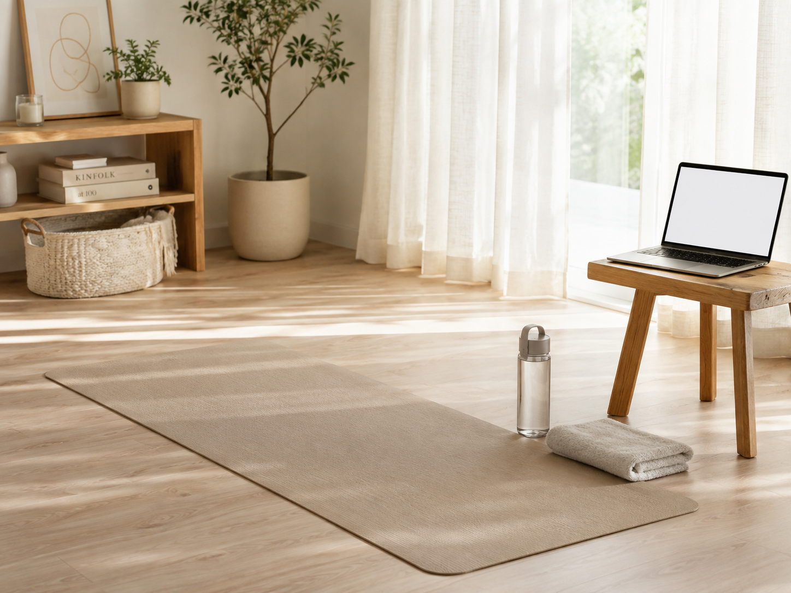

ONLINE FITNESS
通う時間がないなら、
通わない方法を選ぶ。
ジムに通えなかった理由の多くは、意志ではなく移動です。往復1時間が必要な習慣は、式の準備が本格化した時点で必ず止まります。自宅で完結する選択肢を先に検討する価値があります。

先に結論です。まずSOELUを100円で30日試すのが最も損の少ない入り方です。合わなければやめられる金額で、続くかどうかが分かります。フォームを見てもらいたいならLive Fitのマンツーマン、自己流で失敗してきたならCLOUD GYM。
オンラインで足りるのか
結論から言えば、目的次第です。体重を大きく落とすなら食事の管理が主で、運動は補助になります。一方、ドレスで出る部位のラインを整える目的なら、オンラインでも十分に届きます。背中、二の腕、デコルテは大きな器具を必要としない部位です。
逆にオンラインが向かないのは、一人だと絶対にやらない人です。予約した時間に人が待っている、という強制力が必要な場合は、通うタイプのほうが結果が出ます。
3社の比較
| サービス | 試せる条件 | 形式 | 向いている人 |
|---|---|---|---|
| SOELU | 30日100円 | ライブ＋ビデオ | 時間が不規則。まず続くか確かめたい |
| Live Fit | 20分無料 | マンツーマン | フォームを見てもらいたい |
| CLOUD GYM | 要問い合わせ | 遺伝子検査＋指導 | 自己流の制限で失敗してきた |
価格やキャンペーンは変わります。申し込む前に公式サイトで確認してください。
それぞれの中身
SOELU（ソエル）
30日100円ライブレッスンが朝5時から深夜まで。カメラをオフにして受けられるので、部屋を映さずに参加できます。ヨガ、ピラティス、筋トレの幅が広く、飽きにくい。30日間100円で試せるため、続くかどうかを見極める用途に向いています。
30日100円で試す ＞
Live Fit
20分無料トレーナーと1対1のオンライン指導。グループレッスンだとフォームの崩れを指摘されませんが、こちらは見てもらえます。背中や二の腕のように自分では確認しにくい部位を整えたい場合、この差は大きい。
20分の無料体験 ＞続けるための条件
- 時間を先に決める。「空いたらやる」は続きません。朝でも夜でも、固定の枠を1日1つ確保します
- 週2回から始める。毎日やる前提で組むと、1回崩れた時点で全部やめます
- 体重を毎日測らない。仕上げ期に見るべきは数字ではなく、ドレスのラインです
次に読む
食事の側から整えるなら宅配食の選び方、部位ごとの対策は体づくりのページ、残り期間からの逆算は時期別ロードマップにまとめています。
さらに詳しく